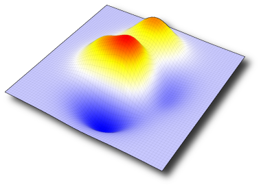

SciGL (Scientific OpenGL Visualization ToolKit) aims at facilitating the development of scientific visualization by providing a set of classes for rapid prototyping of scientific visualization software. It has not been designed as a library since the goal of SciGL is to try to offer a minimal set of objects without the need for any kind of installation. A large number of examples is provided to show how one can use parts of SciGL components to suit its own needs.
- OpenGL, the Open Graphics Library
- GLUT, the OpenGL Utility Toolkit
- GLEW, the OpenGL Extension Wrangler Library
- boost, free peer-reviewed portable C++ source libraries
- libpng, the Portable Network Graphics library
- libjpeg, the Joint Photographic Experts Group library
27, November 2008: Site and beta version online.
This program is free software: you can redistribute it and/or modify it under the terms of the GNU General Public License as published by the Free Software Foundation, either version 3 of the License, or (at your option) any later version. This program is distributed in the hope that it will be useful, but WITHOUT ANY WARRANTY; without even the implied warranty of MERCHANTABILITY or FITNESS FOR A PARTICULAR PURPOSE. See the GNU General Public License for more details. You should have received a copy of the GNU General Public License along with this program. If not, see <
http://www.gnu.org/licenses/>.